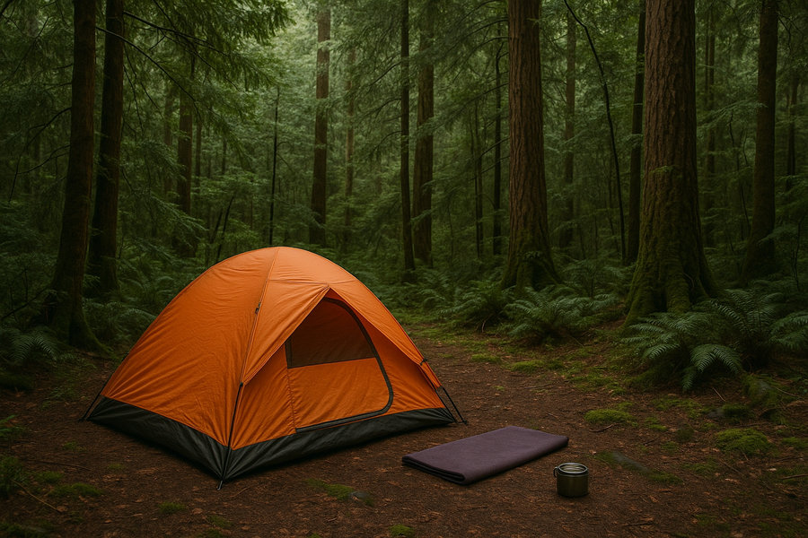
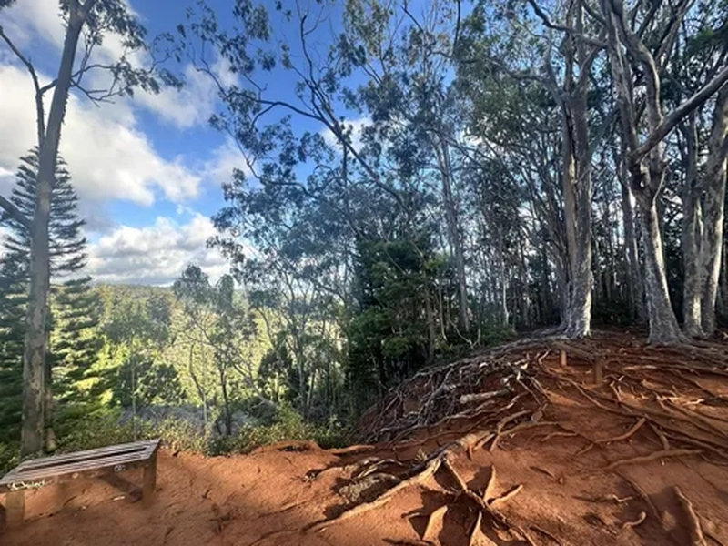

Ahupua'a 'O Kahana State Park
A lush valley-to-sea setting where respect, permits, tidy camp habits, and awareness matter as much as the scenery.
 By Chris Follin
By Chris FollinREGION GUIDE
Hawaii camping needs a different mindset than a mainland car-camping weekend. Permits, weather exposure, respect for place, parking, salt air, and lighter gear choices matter more than building a big camp compound.
Hawaii camping is not a mainland car-camping template with better scenery. The best plan is permitted, light, weather-aware, and easy to clean up. Beach camps need wind, sand, sun, and water-entry judgment. Forest and volcano camps need rain, mud, bugs, and colder-night planning.
A lush valley-to-sea setting where respect, permits, tidy camp habits, and awareness matter as much as the scenery.

The easy Oahu beach-camp lane: wide sand, ocean access, wind planning, permit reality, and a compact setup.

A shoreline camp where morning water, lava rock, kiawe thorns, and simple permitted logistics shape the trip.

The opposite of a beach camp: lava landscapes, fern forest, rain, cool nights, and changing park conditions.

A shaded inland Oahu option with trail access, wet-ground potential, mosquitoes, and a quieter forest rhythm.
The useful comparison is not just beach versus forest. It is Oahu versus Big Island, easy beach access versus cultural or park context, and warm shoreline camping versus cool damp elevation.
| Camp | Best Use | Setup | Watch For | Pick When |
|---|---|---|---|---|
| Ahupua'a 'O Kahana | Valley-to-sea Oahu stay with strong sense of place | Light, tidy, permitted camp | Rules, local context, wet conditions, cleanup discipline | You can treat the place with care and keep the footprint small |
| Bellows Field | Oahu beach camping, sunrise, soft sand, trade-wind comfort | Simple beach kit with secure shade | Shorebreak, strong sun, wind, permit pressure | You want the easiest beach-camp version and can handle exposure |
| Ho'okena Beach | Big Island shoreline camping, swimming, snorkeling, sunsets | Compact coastal setup | Lava rock, kiawe thorns, surge, limited potable water | The ocean is the point and you can keep camp simple |
| Volcanoes National Park | Park-based exploring, lava landscapes, cool nights | Rain-ready sleep and footwear | Rain, cold damp nights, vog/SO2 advisories, closures | You want trails and volcanic terrain more than beach time |
| Keaiwa Heiau | Oahu forest camp, trails, cooler air than town | Bug/rain-aware forest kit | Wet ground, mosquitoes, day-use traffic | You want shade and trail access instead of sand |
Hawaii camping works best when the camp stays small and the location drives the plan.
OAHU BEACH
Choose: you want sand, sunrise, ocean access, and a straightforward permitted beach setup. Skip: wind, sun, shorebreak, or exposed sand will make the night miserable.
PLACE / CONTEXT
Choose: you are willing to keep camp modest, respect rules, and treat the valley-to-sea setting as a place with responsibilities. Skip: you want a casual beach hang without much planning.
BIG ISLAND BEACH
Choose: shoreline camping and morning water are the trip. Skip: lava rock, thorns, surge, or limited water access will frustrate your group.
COOL / DAMP
Choose: park exploring, lava landscapes, and cool nights are the appeal. Skip: you packed for a beach trip or need warm dry evenings.
OAHU FOREST
Choose: shade, trail access, and an inland camp are more useful than beach sand. Skip: wet ground, mosquitoes, or weekend day-use traffic will sour the trip.
ALL HAWAII CAMPS
Choose: only after the official permit, parking, closure, and rule details fit your plan. Skip: any camp where the logistics require guesswork.
These individual pages are where the practical differences show up: beach exposure, shade, rules, parking, nearby activity, and whether the camp works as part of a larger island day.
PERMITS
Rules, closures, allowed nights, parking, and resident/nonresident requirements can change the whole plan. Treat official permit info as the first step, not the last detail.
LIGHT GEAR
Salt air, rain, sand, and limited space all reward a tidy kit that sets up fast and cleans up cleanly. Bring less, secure shade better, and leave fewer things to blow around.
RESPECT
Plan around access, local rules, cultural context, and cleanup as much as scenery. A good Hawaii camp is quiet, permitted, compact, and easy to leave spotless.